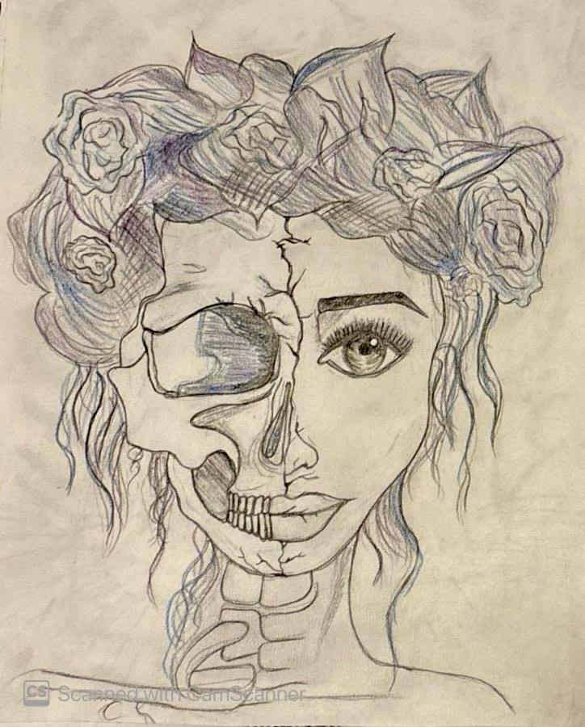
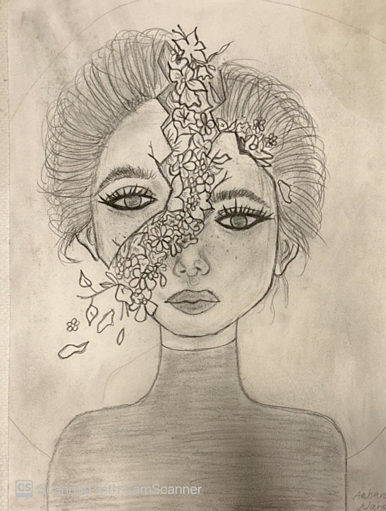
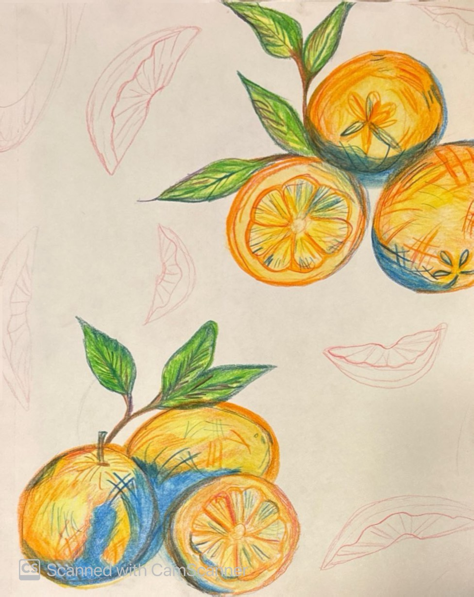
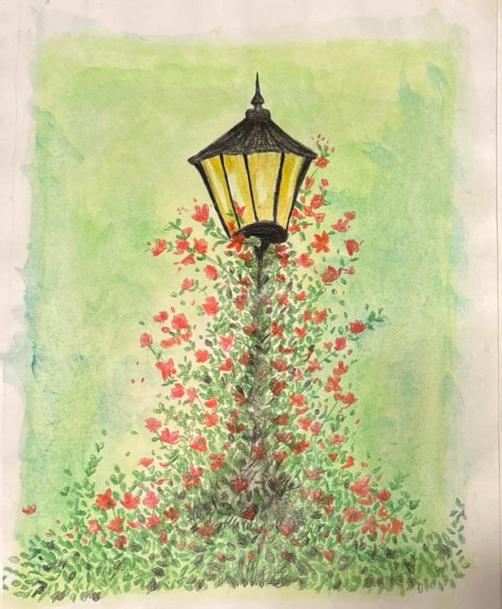
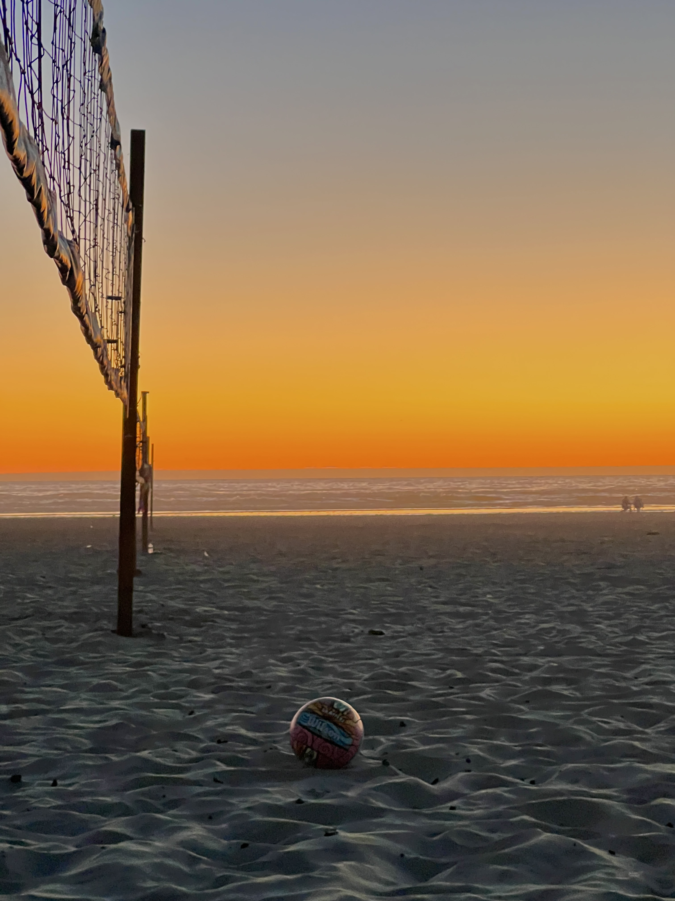
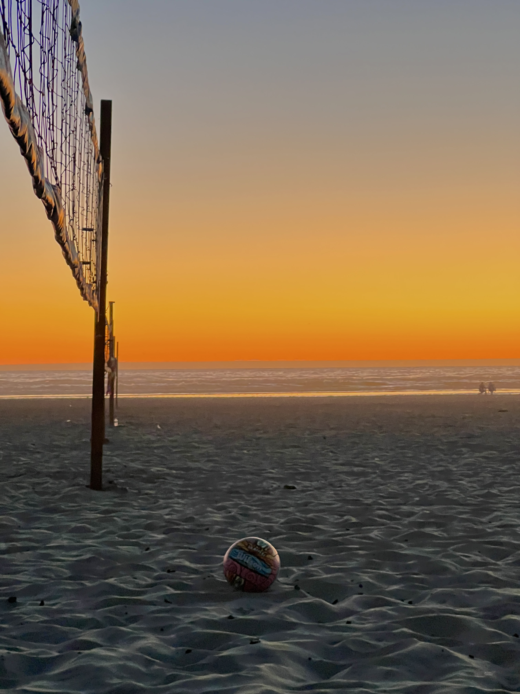
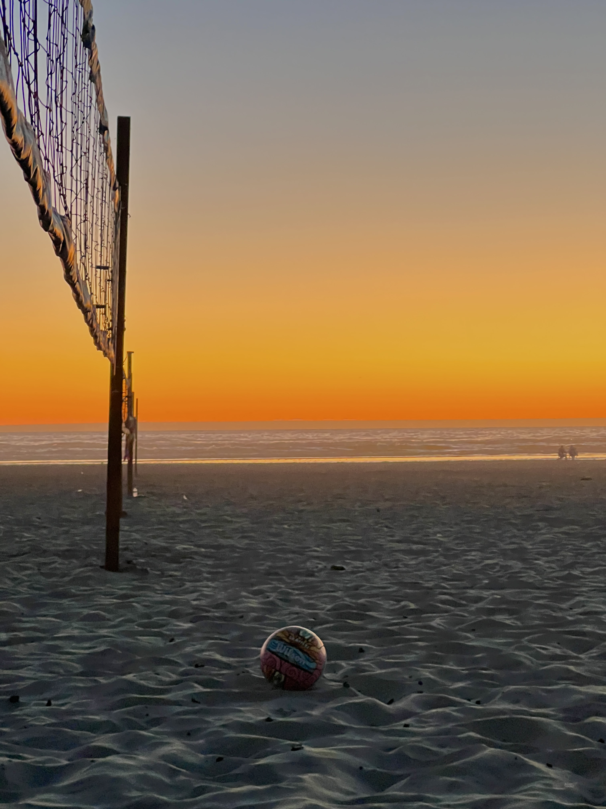

Our Gallery
A collection of beautiful work created by Earth & Canvas members during our outdoor events.
As well as some past event locations!
Drawings
 Paintings
 Nature Hotspots!
 



A collection of beautiful work created by Earth & Canvas members during our outdoor events.
As well as some past event locations!
